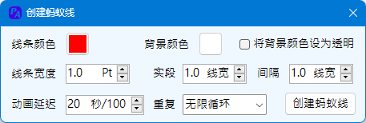

Ribbon菜单PPT助手中如下图所示部分可对进行动画或放映相关的操作。

本功能包含提取路径动画的路径、将曲线设置为图形的路径动画两项功能互补操作，以及一个将图形对齐到路径的功能。
提取动画路径时，程序会将设置于此图形的所有路径都提取出来，不论是主序动画还是互交动画。提取的路径对象为自由曲线对象，但是提取动画路径并不删除图形的动画，只是从外部将动画路径描绘出来。
设为动画路径需要选择一条曲线对象以及一个图形对象。当所选仅一个对象为曲线对象时，无论选择顺序，均以曲线对象为动画路径；当所选对象都为曲线对象时，则总以选择的第二个对象为动画路径。设为动画路径不影响对象已有的动画，仅为其添加该路径的主序动画，如需修改动画化属性，则需要在动画窗格中修改。
对齐到路径，该功能通过选择一个可以作为路径数据采集的对象，采集路径数据后，可以选择需要对齐的图形，将图形对齐到路径的节点或者节段。
采集后的路径可以被删除，在窗口未关闭之前，依然按照采集的路径对齐，但窗口关闭之后，路径数据清除，需要重新采集。
基点指相对于要对齐的图形而言，采用图形哪个方位的点作为对齐点。
对齐到节点/节段，如果对齐到节点则将目标图形的基点对齐到节点，如果对齐到节段，则取节段直线连线的中点为对齐点。对齐到路径，如果为节点，则对齐到以当前节点为起点的节段该点位置的倾角，如果为节段，则对齐到当前节段的倾角。
当前存在选择图形时，则选择基点、调整对齐点或者勾选对齐到路径选项时，都将实时进行对齐。
本功能通过选择一段线形对象（对于自动图形，除直线、矩形外，需用绘图中的转换为线条功能进行转化后才能操作），将其转化为一张具有动画效果的GIF图形。该功能可以创建播放时不间断滚动的蚂蚁线效果，不受制于PPT的播放动画限制。
受限于GIF格式颜色表，线条颜色以及背景颜色仅支持256色。线条宽度为转换后的图形线条的宽度，实段与间隔均以线宽为基础，指定蚂蚁线的实线部分长度以及间隔部分长度。同时可以指定蚂蚁线播放的速度以及动画循环的次数。
本功能的应用场景为，当一份设置了动画的PPT文档需要进行打印时，因为设置动画的缘故，可能存在遮挡问题，移位问题等等，打印出来将无法使用。本程序在移除动画时，考虑如下因素：
移除动画功能的特别说明：
本功能应用场景为，当屏幕外存放了各类素材内容，备份类容，不希望幕外内容的显示影响非放映状态下的浏览时，可以通过此功能将这部分内容设置为隐藏或可见。
此项功能的隐藏或可见均针对放映屏幕以外的图形对象，如果存在放映屏幕内的图形隐藏，则即使通过幕外可见操作，也不会使其可见，而需要使用全部可见操作。
每次操作针对当前或选中幻灯片执行操作，如过需要对多页或全文档执行操作，需在导航窗口选中相应的页面或选中所有幻灯片执行操作。
本功能应用场景为，当幻灯片的图形内容较多，影响编辑时，可以考虑隐藏部分图形，操作完成后，再显示出来。
本功能的选中隐藏只能在当前页面进行操作，需要选中要隐藏的图形对象才可操作；但全部可见针对幻灯片页面操作，可以对当前页面操作，或者对部分页面，或者全部页面。
本功能应用场景为，当幻灯片在放映过程中，希望不退出放映的状态下，使部分图形能通过鼠标进行拖拽，改变位置。例如：在演示过程中，需要将选项拖放到正确位置的操作。教学或培训中可能用到。
本功能的实现原理为，通过创建一段VBA代码（模块DragShapeModule，宏名称Drag）,将宏代码设置到对象图形的操作类型中，借此使插件获取放映时点击的对象，从而进行操作。
VBA代码如下（任何情况下请勿更改代码内容，否则功能会失效并导致程序报错）：
放映拖拽功能的特别说明：